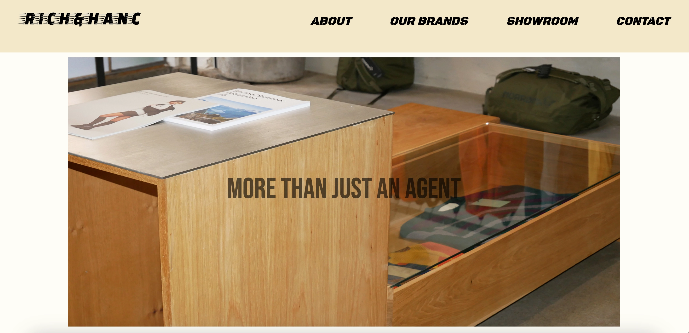
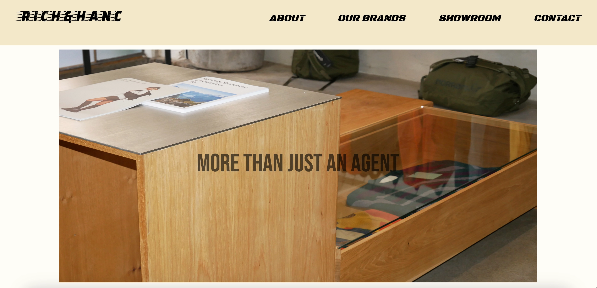

GRUNDLÆGGENDE INDHOLD
I forløbet grundlæggende indhold skulle vi udføre to opgaver. Den første opgave var at skabe et
passionsite
for at inkludere en
grundlæggende forståelse i indholdsproduktion, herunder præproduktion, produktion og
postproduktion. Den anden opgave var et redesign af en eksisterende virksomheds hjemmeside. Dette
blev udført i
samarbejde med en gruppe
på fire personer.
PASSIONSITE
Udviklet Lottiefile med tekst i Adobe Aftereffects.
VIRSKOMHEDSITE
I dette projekt under grundlæggende indhold skulle vi i et gruppearbejde lave et redesign af et
selvvalgt
virksomhedswebsite. Redesignet skulle resultere i et kodet website og omfatte indholdsproduktioner
som interview,
fotos og LottieFiles . I løbet af projektet skulle vi dokumentere design- og udviklingsprocessen.
Min gruppe kontaktede
et dansk mode agentur ved navn RICH & HANC. I processen skulle vi researche hvordan vi ville
redesigne deres
eksisterende site.
Et redesign af et modeagentur gav mulighed for at skabe en ny visuel identitet, der
afspejler agenturets værdier og
visioner. Dette indebar forbedring af brugeroplevelsen (UX) ved at analysere platformen for at
identificere svagheder og
muligheder for forbedringer, herunder mere intuitive navigationselementer, bedre layout og mere
engagerende indhold. Vi
forsøgte at skabe et moderne og tidsvarende design, der kunne sikre, at agenturet kunne forblive
relevant ved at
inkorporere de nyeste designtrends og teknologier.

Vi gjorde brug researchmetoder, som vi havde lært i tema 3 - grundlæggende UX /UI- til at undersøge virksomhedens nuværende sites brand, målgruppe, produkter/services, design, struktur, formål, brugerrejser og formål. Vi analyseret brugerens opfattelse af det eksisterende site med en 5-sekunders-test og BERT og det samme gjorde vi på vores redesign.
I idéudviklingsfasen tog vi udgangspunkt i vores research. Vi udvalgte ideudviklingsmetoder til at
planlægge og definere
fokusområderne for vores redesign. Dette inkluderede at fastlægge målgruppen, brugerrejsen,
funktionaliteterne og de
enkelte undersider. Efter test og research identificerede vi fokusområder, hvilket gjorde, at vi
først kunne
identificere målgrupperne. Dette dannnede grundlaget for at klargøre vores virksomheds identitet og
funktioner på
forsiden af platformen.
Herefter var det afgørende, at vi fokuserede på brugerrejsen ved at
skabe
engagerende og
optimere navigation, søgning og produktpræsentation. For at øge sidens funktionalitet tilføjede vi
nye funktioner og
forbedrede eksisterende. Vores undersider præsenterer gallerier og services for at tiltrække og
informere besøgende. Ved
at kombinere disse elementer kunne vi skabe et overskueligt og brugervenligt redesign af agenturets
platform.
DIGITAL PROTOTYPE
 
